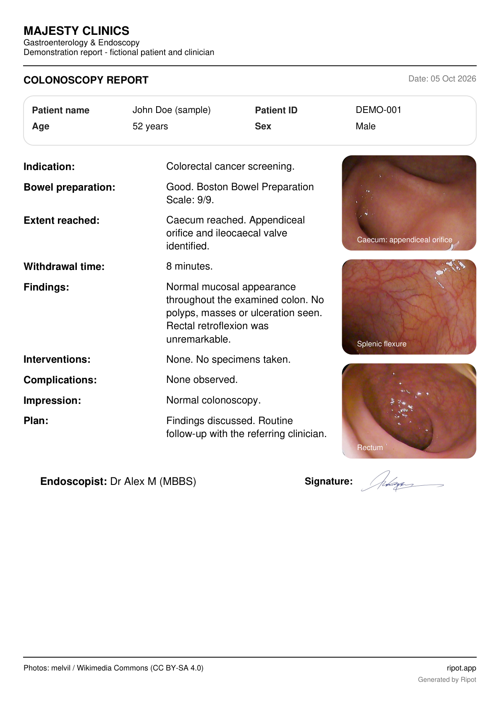
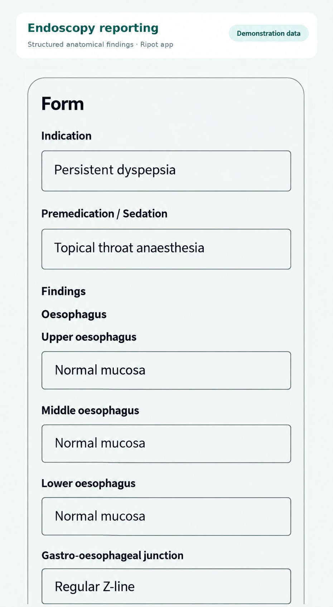
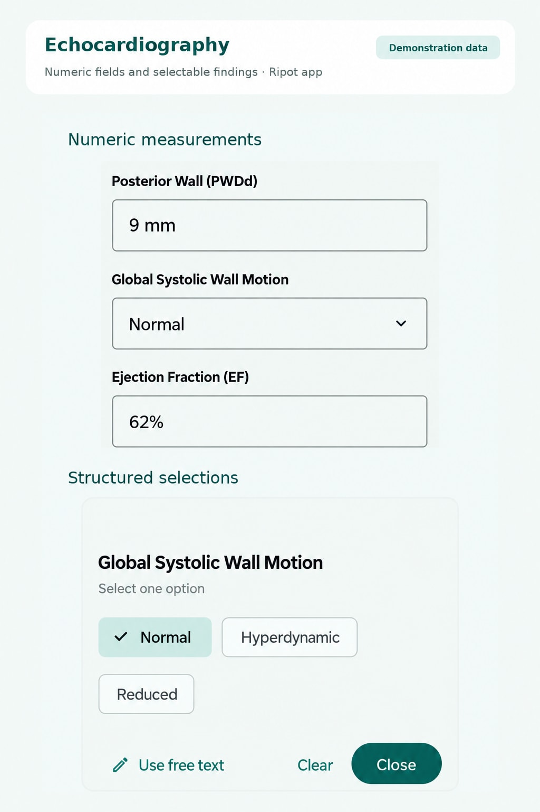

Templates that work your way
Start with a built-in template or create your own. Combine text, choices and measurements, then reuse the structure next time.
A complete reporting workflow for doctors and healthcare professionals. Start with a template, add findings, images and signatures, then share a polished PDF. Less formatting. More focus on your work.
Clinical data stays on your device or browser. How privacy works

The complete reporting workflow
A simple workflow that helps you spend less time rebuilding and formatting reports.
Start with a built-in template or create your own. Combine text, choices and measurements, then reuse the structure next time.
Capture or attach clinical images and add your signature within the reporting workflow. Keep the supporting detail with the report.
Add your letterhead, preview the layout and export a polished PDF. Give your reports the presentation your work deserves.
Export your finished report as a PDF for printing or sharing through your chosen apps. You decide where each copy goes.
See the workflow
See how Ripot organises endoscopy findings and echocardiography measurements, then explore a finished, signed report.

Work through organised anatomical fields, with room for your own clinical findings.

Enter measurements and select clinical findings in specialty-specific forms.
Review the finished layout and export a professional PDF with clinical images.
Ripot interface illustrations with fictional demonstration values, plus a fictional sample report. These examples show different specialties; layout varies by device and version. Swipe through on mobile. Tap any image to enlarge, then zoom in for detail.
The sample uses fictional patient, clinician and clinic details and a demonstration autograph. The three real colonoscopy photographs are illustrative and do not belong to the fictional patient. Photographs by melvil, via Wikimedia Commons: appendiceal orifice, splenic flexure and rectum. Used under CC BY-SA 4.0, with scaling, rounded clipping and captions; those image adaptations retain the same licence. No endorsement is implied.
Beyond the report
Ripot is a complete reporting tool on its own. Optional Records, Registry and Logbook tools help you organise information, follow patients and document experience.
Reuse selected details from completed reports. Search, filter by procedure or facility, and switch between lists and tables. Export to review your activity in a spreadsheet.
Follow patients over time with patient details and dated updates. Group related measurements with units, compare latest values or full history in tables, and export for analysis.
Keep track of procedures and your participation. Use report details for a log entry, or use Quick Log when a procedure does not need a full report. Filter and print your log.
Less retyping. More value from your work. Reuse selected report data in these tools when you choose. Registry and Quick Log also work without creating a report.
CSV exports open in spreadsheet tools for review and analysis. Records packages include exported record values and available PDFs; they are not encrypted or full app backups. Encrypted Registry backups restore inside Ripot with your passphrase and exclude report PDFs. Logbook has its own backup workflow. Acceptance of a logbook for official training depends on the relevant training body.
Privacy matters
Completed clinical reports—including patient details, images, signatures and generated PDFs—stay on your device or in your browser. Ripot does not upload them to its servers.
Read our privacy policy →Exporting or sharing creates a copy wherever you choose to save or send it. Use destinations approved by your organisation.
Account, subscription and reusable template structure may be processed or synced. Keep patient information out of template names and field labels.
Local clinical data does not automatically sync between devices. Back up important data outside the original device; clearing browser storage or losing a device can remove local data.
Protect your device, exported files and backup passphrases. Local storage is not a promise that every file is encrypted, and using Ripot does not replace your organisation’s data-handling responsibilities.
Install Ripot on Android or use it in your browser. Start with reporting; explore the additional tools when you need them.
Windows desktop app: coming to Microsoft Store. Until then, use Ripot Web on your Windows PC.
On a Mac, use Ripot Web in your browser.
Start free with built-in templates, up to 4 custom templates and 10 saved final PDFs per device. Drafts do not count towards the PDF limit. Check the Premium screen in your installed version for its current saved-PDF allowance. Available device or browser storage still applies. Keep a separate backup. See Premium in the app for advanced features. Google Play shows pricing and availability for your country.